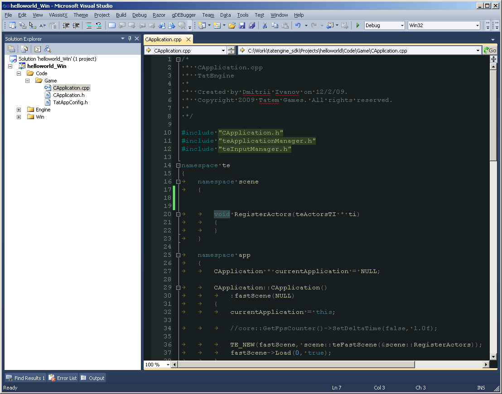
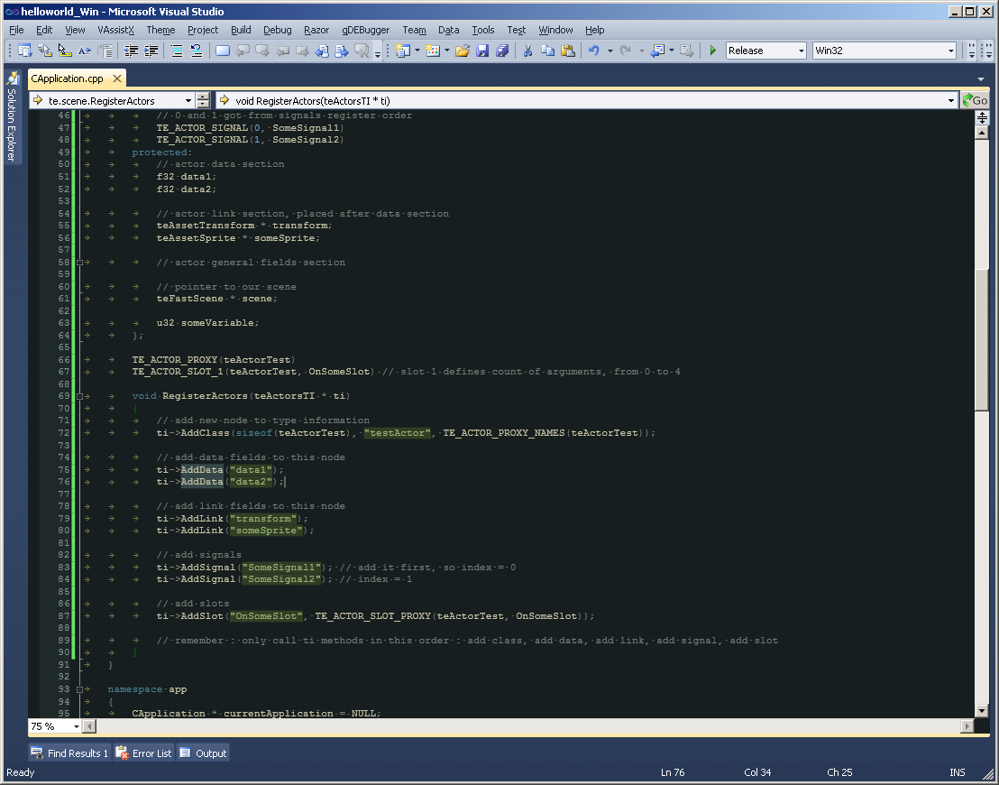
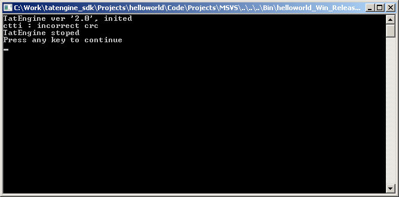
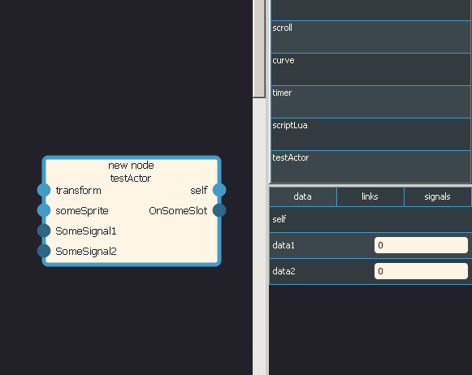
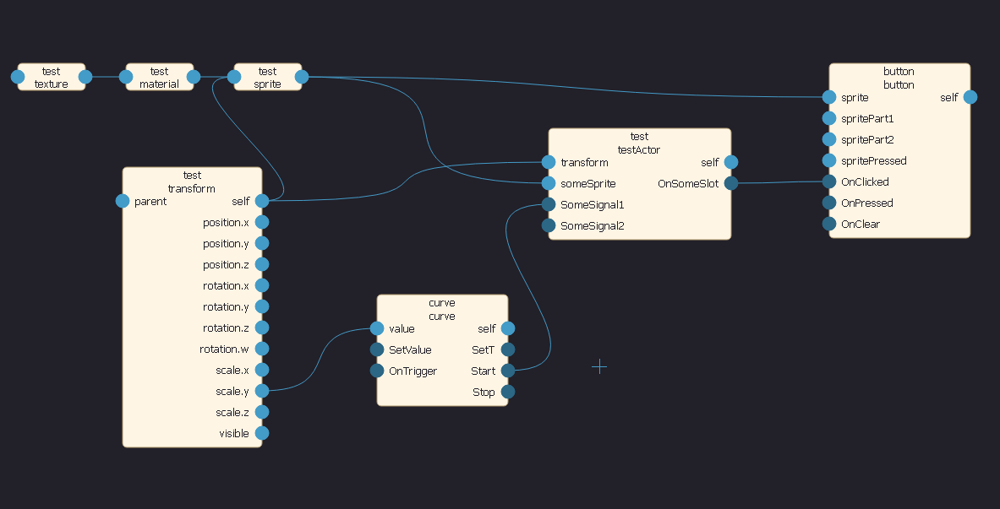

C++ Scripting
Let's start with building project, open CApplication.cpp.
So, basic actor template. Native actors are more complex than lua scripts, but for now you only should remember that native actor have field sections : data, links and general. Data sections contains only float fields, they will be accessible in editor (only editable or editable and linkable). Links are only pointers to something. And general fields is up to you, just classic C++ class fields.
// test actor class
class teActorTest
{
public:
// constructor
teActorTest(teFastScene * setScene)
:scene(setScene)
{
}
// destructor
~teActorTest()
{
}
// will be called each frame
void OnUpdate()
{
}
// will be called on slot receive event
void OnSomeSlot(f32 agrument)
{
transform->scale.x = TE_RAND + 0.5f; // random macro, return from 0 to 1
SomeSignal1(); // call signals like normal class methods
}
// signals
// 0 and 1 got from signals register order
TE_ACTOR_SIGNAL(0, SomeSignal1)
TE_ACTOR_SIGNAL(1, SomeSignal2)
protected:
// actor data section
f32 data1;
f32 data2;
// actor link section, placed after data section
teAssetTransform * transform;
teAssetSprite * someSprite;
// actor general fields section
// pointer to our scene
teFastScene * scene;
u32 someVariable;
};
TE_ACTOR_PROXY(teActorTest)
TE_ACTOR_SLOT_1(teActorTest, OnSomeSlot) // slot 1 defines count of arguments, from 0 to 4
void RegisterActors(teActorsTI * ti)
{
// add new node to type information
ti->AddClass(sizeof(teActorTest), "testActor", TE_ACTOR_PROXY_NAMES(teActorTest));
// add data fields to this node
ti->AddData("data1");
ti->AddData("data2");
// add link fields to this node
ti->AddLink("transform");
ti->AddLink("someSprite");
// add signals
ti->AddSignal("SomeSignal1"); // add it first, so index = 0
ti->AddSignal("SomeSignal2"); // index = 1
// add slots
ti->AddSlot("OnSomeSlot", TE_ACTOR_SLOT_PROXY(teActorTest, OnSomeSlot));
// remember : only call ti methods in this order : add class, add data, add link, add signal, add slot
}Place code like this.
Close world editor. Build and run application in release from visual studio. You should see crc warning. Basicly engine is data driven, so if you change ctti (compile time type information) then baked data becomes invalid.
Now open world editor, you should see new actor.
Just connect it instead of lua script. It will work same as lua script.
To move forward you need to know how to get asset by they index
// like this
teAssetTransform & transform = scene->GetAssetPack().transforms[someSprite->renderAsset.transformIndex];
video::teMaterial & material = scene->GetContentPack().materials[someSprite->renderAsset.materialIndex];